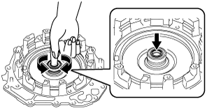

END COVER INSPECTION
id051700663400
Radial Needle Bearing Inspection
1. Rotate the radial needle bearing shown in the figure by hand and verify that there is no malfunction in the radial needle bearing (rotation sticking).
